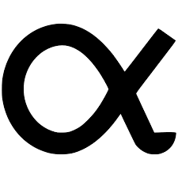
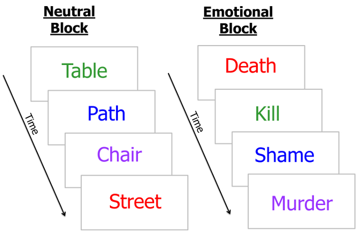
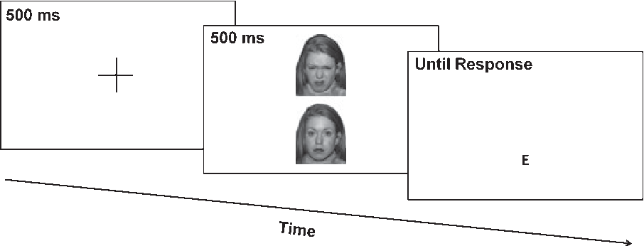
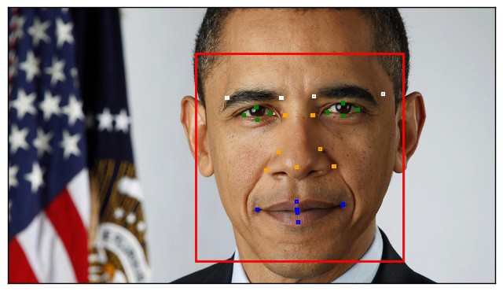

John E. DeJesus
Bilingual Honours BA in Psychology, 2020 [email]Hi, I am a pre-doc research assistant and programmer. My objective is to increase reduce*** human suffering and improve mental health and well-being. I hope to achieve this by contributing to data-driven, scalable (primarily digital) interventions. Currently, my short-term goals are to gain doctoral integrated, interdisciplinary training in clinical science to harness and increase the impact of advances in allied fields to achieve my objective on a public health scale. This website is a portfolio of the things I've been working on.
All these applications are prototypes showcased for demonstration purposes. Mental health and well-being interventions, emphatically, must not be used for therapeutic purposes.


Simple Statistics is a free-to-use, no-download online resource to perform basic inferential statistical analysis.
YouMatter, named in respects of #BLM, is an all-in-one, self-administered suicide risk assessment, mental health screener, and personalized treatment.
Experimental Replications

The Emotional Stroop Task is a behavioural measure of information processing delays for emotionally salient stimuli. This version of the EST uses lexical stimuli and records reaction times (RT) by keyboard press.

The Dot Probe Task is one form of attention-bias modification (ABM). This version uses lexical stimuli for training and visual stimuli (i.e., visual dot probe task) for the experimental block, and measures RT by keyboard press. The purpose of this program is to train attention towards neutral as opposed to negative stimuli (as opposed to some ABMs developing attention to positivity).
Resources

The Face Stimuli Standardizer program is a precision time-saver that standardizes the position and size of face stimuli. The picture below illustrates what exactly that means (click picture to expand):
 A visual reproduction of what the program corrects. Model photos courtesy of Shutterstock.
A visual reproduction of what the program corrects. Model photos courtesy of Shutterstock.
A visual reproduction of what the program corrects. Model photos courtesy of Shutterstock.

This Psychology GRE Calculator provides students a column to input their answers and notes for the Psychology GRE practice tests. Responses are checked automatically. This calculator supports both pre-2017 and post-2017 versions, and also computes subscale and composite scores.
Here are some other study resources you might like:
Here are some other study resources you might like:


- Psychology GRE Practice Test Book (Pre-2017)
- Psychology GRE Practice Test Book (Post-2017)
- Psychology GRE notes
If you're curious about what I've been reading, here is my book shelf:
Currently Reading
- The Short Stories by Ernest Hemingway
- The Diversity Delusion by Heather Mac Donald
- Harry Potter à L'Ecole des Sorciers by J. K. Rowling
- Meditations by Marcus Aurelius
- The Discourses by Epictetus
- Word Painting by Rebecca McClanahan
- The Illiad by Homer
- The Construct of Asian American Race, Gender, and Sexuality by Rosalind Chou
- Pragmatism by William James
- The Ode Less Travelled by Stephen Fry
- Surfing Uncertainty by Andy Clark
- Evolution and Contextual Behaviorual Science by Stephen Hayes
- Jane Eyre by Charlotte Bronte
- The Autobiography of Malcom X by Malcolm X
Future "To-Read" List
- Noli me tangere by José Rizal
- What Happened by Hilary Clinton
- The Philippine Experience by Virgilio G. Enriquez
- Becoming by Michelle Obama
- Too Much and Never Enough by Mary Trump
Reading List 2020
- Nonviolent Communication by Marshall Rosenberg
- Farenheight 451 by Ray Bradbury
- The Confidence Gap by Russ Harris
- The Power of Now by Eckhart Tolle
- Resilience by Eric Greitens
- Lord of the Flies by William Golding
- IFS: New Dimensions by Richard Schwartz
- Crucial Conversations by Joseph Grenny
- Je suis un Maudite Sauvage by An-Antane Kapesh
- La Petite Prince by Antoine de Saint-Exupéry
- The Latinos of Asia: How Filipino Americans Break the Rules of Race by Anthony Christian Ocampo
- Empath Survival Guide by Judith Orloff
- Long Walk to Freedom by Nelson Mandela
- Pride and Prejudice by Jane Austen
- ...and 3 others
Reading List 2019
- Looking for Alaska by John Greene
- Perks of Being a Wall Flower by Stephen Chompsky
- A Man's Search for Meaning by Viktor Frankl
- Savor by Thich Nhat Hhan
- Nicomachean Ethics by Aristotle
- Organize Tomorrow Today by Jason Selk
- The Craving Mind by Judson Brewer & Jon Kabat-Zinn
- Letting go of Worry by Jennifer Alison
- Manage your day-to-day by Jocelyn Glei
- As a Man Thinketh by James Allen
- Not Nice by Aziz Gazipura
- Getting Things Done by David Allen
- Essentialism by Greg McKeown
- Attached by Amir Levine and Rachel Heller
- The Subtle Art of Not Giving a F*ck by Mark Manson
- Outsiders by S.E Hinton
- Dreams from My Father by Barack Obama
- The Heart of the Buddha's teachings by Thich Nhat Hhan
- ...and 9 others